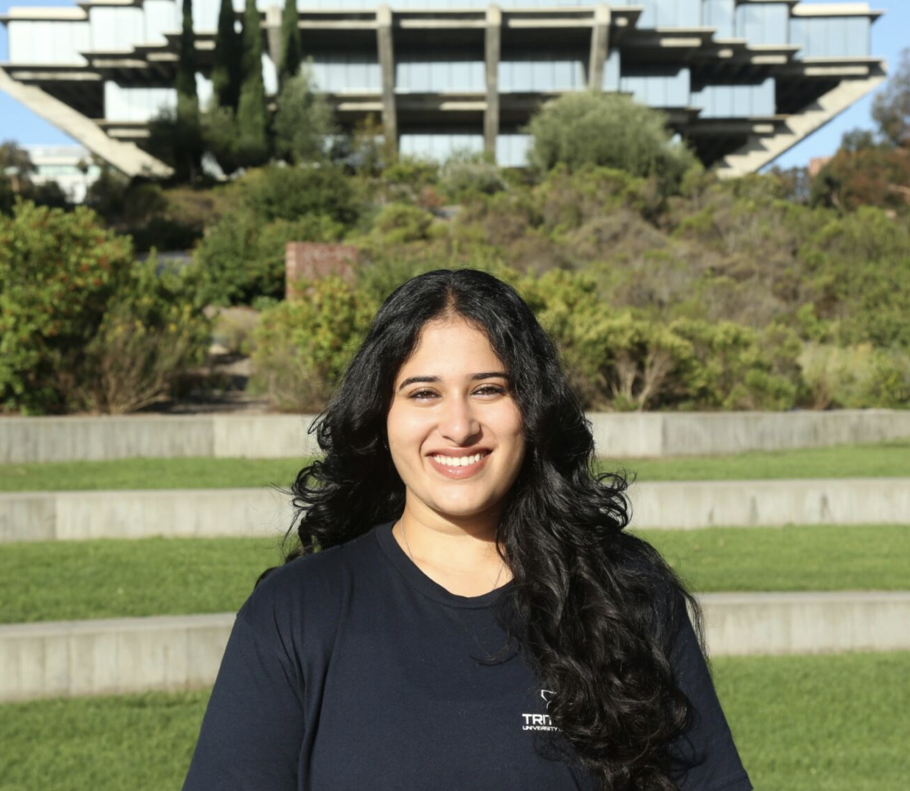

A patient-specific induction dose ceiling before anesthesia begins. A warning window before a blood pressure crash. A data-driven PACU recovery estimate the moment a patient leaves the OR.
Dosing is based on weight alone. Monitors alarm only after a crash has already begun. Discharge is judged with a decades-old checklist, leading to both premature discharges and PACU bottlenecks.
A personalized dose ceiling before anesthesia begins. A warning window before a crash, not after. A clear, data-driven read on recovery time the moment a patient leaves the OR.
A patient-specific safe dose ceiling before anesthesia begins — not a weight-based lookup.
Learn how it works →A warning before a blood pressure crash happens, not a monitor that reacts once it already has.
Learn how it works →A clear read on PACU recovery time at the moment of OR exit, easing bottlenecks and premature discharge.
Learn how it works →Watch predictive alarming work on a simulated case: as each cuff reading comes in, the model forecasts the next one and the odds of a hypotensive event — before it happens.

Mechanical engineering undergraduate at UC San Diego, specializing in controls and robotics. Undergraduate researcher at the UCSD Contextual Robotics Institute. Solo-built the Avasar Health platform end-to-end, in collaboration with Dr. Gabriel at UCSD Health.
LinkedIn ↗IRB approved. Independent validation cohorts per module. No cross-contamination of training data between modules. Full performance metrics available on request.